Comparem nap ecològic i convencional: quin té més nutrients segons la ciència i segons la IA?
Nom en llatí de nap:Brassica rapa subsp. rapa
Nom en anglès de nap:Turnip
He trobat diferents articles científics que estudian el meu tema i els trobareu a continuació en format APA7. APA7 es una forma d'escriure un article cientific
Cámara-Martos, F.; Sevillano-Morales, J.; Rubio-Pedraza, L.; Bonilla-Herrera, J.; de Haro-Bailón, A. Comparative Effects of Organic and Conventional Cropping Systems on Trace Elements Contents in Vegetable Brassicaceae: Risk Assessment. Appl. Sci. 2021, 11, 707. https://doi.org/10.3390/app11020707
Concentración total de oligoelementos (materia seca) en las especies de Brassicaceae analizadas (media ± desviación estándar).
Dades analitzades:
Co
Cr
Cu
Fe
Mn
Zn
El que posa en l'article
Pregunta: El nap ecològic té més ferro que el nap convencional ?
El que diu ChatGPT.
Error ChatGPT
ChatGPT admès el seu error
Solució: Va trobar que les concentracions de ferro en naps ecològics eren inferiors a les dels convencionals en aquest cas particular.
Concentració total de metalls pesants (matèria seca) en espècies de Brassicaceae analitzades (mitjana ± desviació estàndard).
Dades analitzades:
Cd (µg/g)
Ni (µg/g)
Pb (µg/g)
El que posa en l'article.
Pregunta: Les turnip greens cultivades a la Farm I presenten una concentració de plom (Pb) més alta que les cultivades al sistema orgànic ?
El que diu ChatGPT.
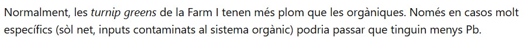
ChatGPT ha trobat l'article que estava fent servir.
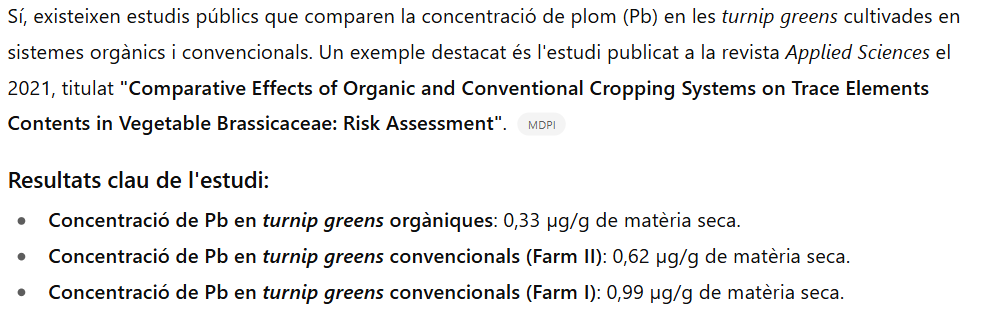
Figure 1. Simulated data and fitted probabilistic distribution for Co, Cr, Cu, Fe, Mn and Zn in conventional Brassicas.
Figura 2. Dades simulades i distribució probabilística ajustada per a Co, Cr, Cu, Fe, Mn i Zn en brassicàcies orgàniques.
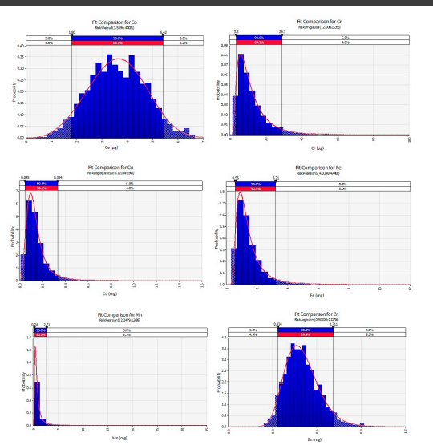
Figura 3. Dades simulades i distribució probabilística ajustada per a Cd, Ni i Pb en Brassicàcies convencionals.
Figura 5. Dades simulades i distribució probabilística ajustada per a Cd, Ni i Pb en Brassicàcies orgàniques.
Solució: Les turnip greens cultivades a la Farm I presenten una concentració de plom (Pb) més alta que les cultivades al sistema orgànic.
Aylaj, M.; Sisouane, M.; Tahiri, S.; Mouchrif, Y.; El Krati, M. (2023). Effects of Humic Acid Extracted from Organic Waste Composts on Turnip Culture (Brassica rapa subsp. rapa) in a Sandy Soil. J. Ecol. Eng., 24(7), 345–359. https://doi.org/10.12911/22998993/163510
Característiques físiques i químiques dels composts utilitzats en experiments amb plantes de nap
El que posa en l'article.
Pregunta: C3 conté més Zn o C4?
El que diu ChatGPT.
El que posa en l'article es similar que el que diu ChatGPT, això significa que ChatGPT no s'ha equivocat.
Solució: C3 conté molt més zinc que C4.
Suhareva, T. N.; Sergienko, I. V. (2020). Proecting of functional structure of fish product. IOP Conf. Ser.: Earth Environ. Sci., 422, 012055. https://doi.org/10.1088/1755-1315/422/1/012055
Composició nutricional i fitoterapèutica del nap cru: vitamines, polsacarids i compostos anticancerígens
Dades analitzades:
Sucres
Vitamina C
Vitamines B1, B2, B5, PP
Polisacàrids
Esteroides vegetals (sterols)
Glucorafànina
El que posa en l'article
Li vaig demanar que l'interpreti aquest estudi però el ChatGPT diu que no trobava l'estudi
Pregunta:El nap conté el doble de vitamina C que altres arrels comestibles?
El que diu ChatGPT
Les dades que dona el ChatGpt és diferent del que hi ha en l'estudi. Li dic que hi ha difèrencia, i ell contesta:
Ah, ara entenc millor! Sí, hi ha diferències notables entre les dades que et vaig donar i les que apareixen en aquest estudi. Vegem-les amb deteniment:
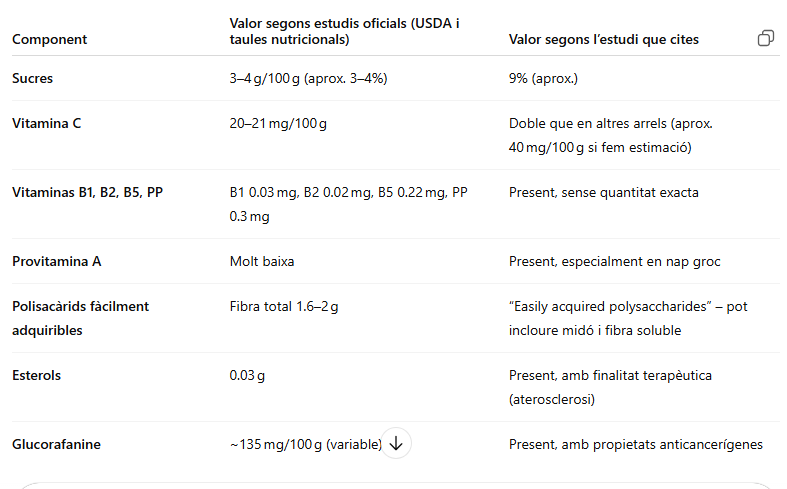
Error ChatGPT
Chatgpt admès que era un error seu.
Solució: ChatGPT diu que cada 100 mg de nap conté 20 mg de vitamines C, però en realitat cada 100 mg de nap conté 40 mg de vitamines C.
Termine, E.; Lairon, D.; Taupier-Letage, B.; Gautier, S.; Lafont, R.; Lafont, H. (1987). Yield and content in nitrates, minerals and ascorbic acid of leeks and turnips grown under mineral or organic nitrogen fertilizations. Plant Foods Hum. Nutr., 37, 321–332.
Taula 4. Contingut mineral dels naps collits el 20 de desembre Tractament
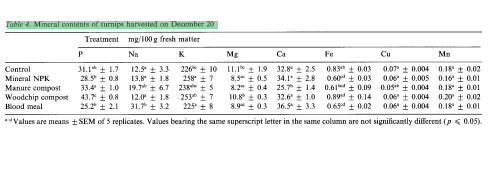
Dades analitzades:
P (Fòsfor)
Na (Sodi)
K (Potassi)
Mg (Magnesi)
Ca (Calci)
Fe (Ferro)
Cu (Coure)
Mn (Manganès)
El que posa en l'article.
Pregunta: Nap conté més minerals Cu que Mn?
El que contesta ChatGPT:
ChatGPt ha contestat bé.
Solucó: El nap cru, en una porció de 100 grams, conté aproximadament 0,05 mg de coure (Cu) i 0,16 mg de manganès (Mn). Això indica que el nap té més manganès que coure, i no al revés.
Mamede, M.; Cotas, J.; Pereira, L.; Bahcevandziev, K. (2024). Seaweed Polysaccharides as Potential Biostimulants in Turnip Greens Production. Horticulturae, 10, 130. https://doi.org/10.3390/horticulturae10020130
Taula 4. Caracterització de la matèria seca, cendres, proteïnes, minerals i oligoelements de les fulles de nap segons el tractament.
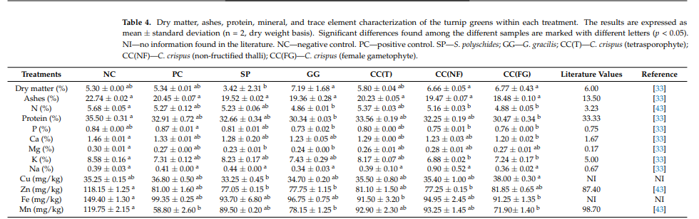
Dades analitzades:
Dry matter
Ashes
N
Protein
P (Fòsfor)
Ca (Calci)
Mg (Magnesi)
K (Potassi)
Na (Sodi)
Cu (Coure)
Zn (Zinc)
Fe (Ferro)
Mn (Manganès)
El que posa en l'article.
Pregunta:Com afecta el tractament o cocció del nap al contingut de nutrients i minerals?
El que diu ChatGPT:
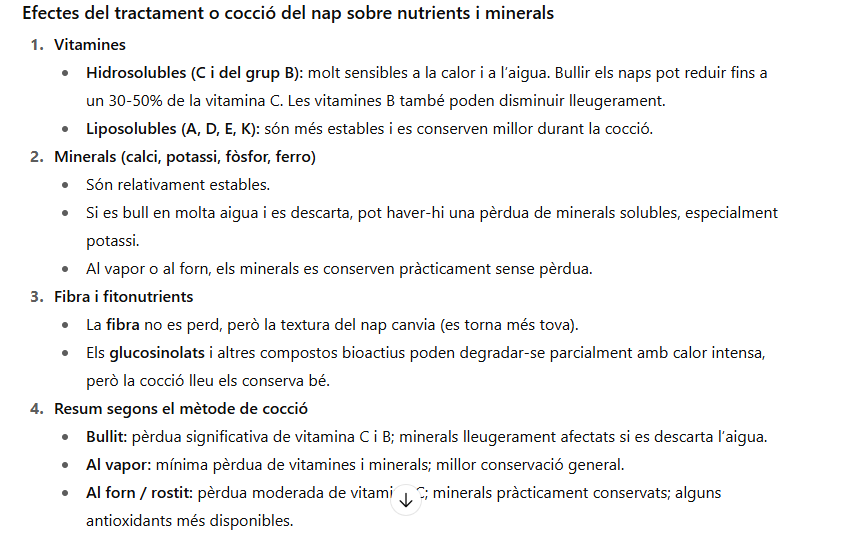
ChatGPT m'ha donat una informació semblants del que posa en l'article, això vol dir que ChatGPT ha contestat bé.
Lloc on ChatGPT va trobar informació.
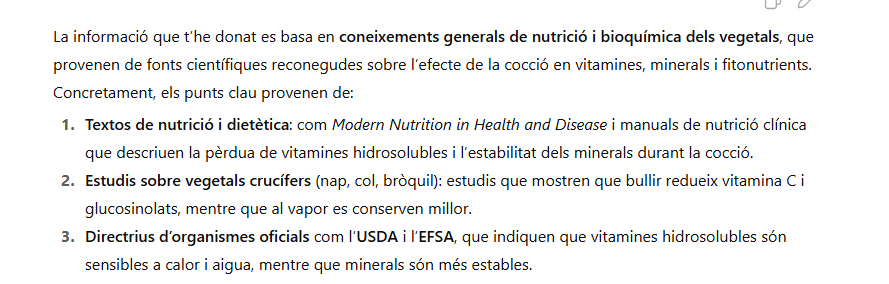
Solució: El que diu en l'article: la cocció i els diferents tractaments aplicats al nap poden reduir parcialment el contingut de proteïnes i alguns minerals, especialment els més solubles, però també poden mantenir o enriquir altres nutrients depenent del tipus d’additiu utilitzat.
Shalaby, H. S.; Mohamed, A. S. (2022). Study of the Physiochemical, Sensorial, Microbiological, and Antioxidant Properties of Probiotic-Fortified Turnip Juice During Storage. Bull. Natl. Nutr. Inst. Arab Repub. Egypt, 59, 105–106.
Segons Taula (1A) feta pel Shalaby, H. S. i Mohamed, A. S. sobre efecte del contingut de proteïnes en el suc de nap probiòtic durant el període d'emmagatzematge
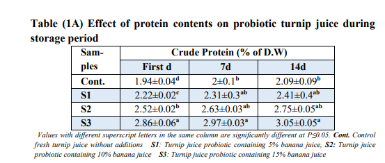
El que conté més proteïna crua és S3 en tots els temps mesurats:
Pregunta:L’augment del percentatge de plàtan (5%, 10%, 15%) té un efecte significatiu sobre el contingut de proteïna crua del suc de nap probiòtic?
El que contesta ChatGPT.
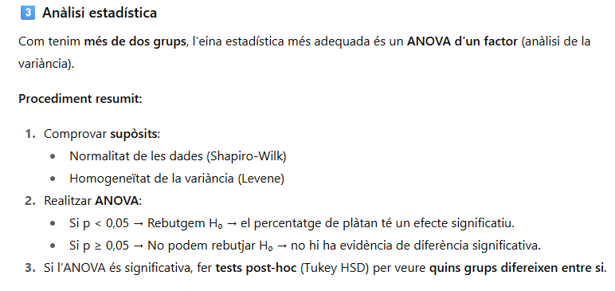
ChatGPT em va explicar fórmula per poder calcular, però no va trobar resultat exacta del que demanava.
Solució: L’augment del percentatge de plàtan en el suc de nap probiòtic incrementa significativament el contingut de proteïna crua, amb S3 (15% plàtan) mostrant els valors més alts: 2.86% (Dia 0), 2.97% (Dia 7) i 3.05% (Dia 14).
Cruz Reyes, J. S. (2022). Producción y calidad de Brassica rapa. var. rapa (Nabo) mediante la aplicación de una enmienda microbiana y un bioregulador. Tesis de pregrado, Universidad Nacional Agraria de la Selva, Tingo María, Perú.
Segons Taula 2. Composició nutricional del nap editat per Cruz Reyes, J. S. en l'any 2022.
Dades analitzades:
Calorías
Hidratos de carbono
Proteínas
Grasa
Fibra
Vitamina C
Potasio
Manganeso
Vitamina B6
Calcio
Ácido fólico
Magnesio
Fósforo
Hierro
Vitamina B2 (rioboflavina)
Vitamina B5 (ácido pantoténico)
El que posa en l'article.
Pregunta:Quins són els principals components nutricionals que conté el nap ?
El que diu ChatGPT.
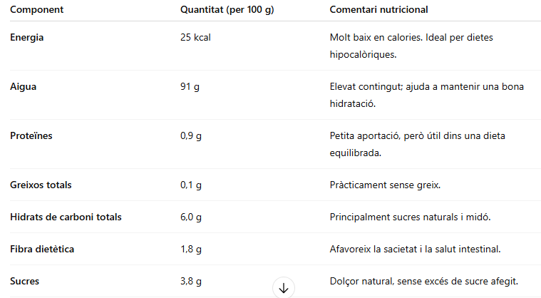
El que diu ChatGPT és diferent que el que posa en l'estudi. Això significa que el ChatGPT ha admès un error.
ChatGPT justificant:
Jo penso que el ChatGPT té raó, perquè vaig buscar informació sobre el que diu ChatGPy i vaig mostrar que el ChatGPT tenia raó.
Solució:Vaig comprovar que ChatGPT proporcionava dades semblants a les de l’article. Tanmateix, el contingut de potassi del nap que vaig estudiar era de 276 mg, mentre que ChatGPT indicava 191 mg. Inicialment vaig pensar que era un error de ChatGPT, però en consultar-li, ell va explicar que aquesta variació
és habitual en els vegetals: factors com el tipus de sòl, l’aigua, la temporada i la varietat poden fer que el contingut de minerals fluctui fins a un 30-40%.
Condori Cueva, M. A. (2018). Capacidad antioxidante del extracto acuoso de Brassica napus L. (Nabo), frente al sistema generador de radical libre 2,2-difenil-1-picrilhidrazilo (DPPH). Tesis de pregrado, Facultad de Medicina Humana y Ciencias de la Salud, Escuela Profesional de Farmacia y Bioquímica, Lima, Perú.
Valor nutricional de Brassica napus L. ( nap) sobre la base de 100gr de matèria fresca.
Dades analitzades:
Energia (Kcal)
Aigua (ml)
Proteïnes (g)
Hidrats de carboni (g)
Fibra (g)
Potassi (mg)
Fòsfor (mg)
Folats (mcg)
Vitamina C (mg)
Calci (mg)
Ferro (mg)
Iode (mg)
Magnesi (mg)
El que posa en l'article.
Pregunta: Quin és el valor nutricional del Brassica napus L. (napo) per cada 100 g de matèria fresca?
El que diu ChatGPT
ChatGPT m'ha donat una informació amb dades semblantes que l'estudi, però encara hi ha una difenrencia gran entre l'energia que conté el nap.
Ara li pregunto a ChatGPT, perquè m'ha donat dades falses, i ell contesta:
Solució: Les diferències en les dades es deuen principalment a la varietat de nap, al mètode analític utilitzat i a l’estat de la mostra; nabs més frescos i amb més aigua presenten menys kcal, mentre que les mostres cuites o menys humides i l’ús de diferents mètodes de càlcul poden incrementar els valors energètics.
Ara com que no he trobat més informació sobre els nutrients que conté el nap, continuaré explicant els nutrients de la pastanaga.
Comparem pastanaga ecològic i convencional: quin té més nutrients segons la ciència i segons la IA?
Nom en llatí de pastanaga:Daucus carota
Nom en anglès de pastanaga:carrot
Fabiyi, E. F., Abubakar, B. Z., Yahaya, A. T., Yakubu, A. A., & Yakubu, D. H. (2015). Carrot intake, its perception, nutritional value and health benefits: A case study of Sokoto Metropolis, Sokoto State, Nigeria. *Article*, *Pakistan Journal of Nutrition*, 14(3), 136–140. Asian Network for Scientific Information, Pakistan.
Segons la Taula 1: Nutrients de les pastanagues crues. 1 tassa: 122 g, escrit per Fabiyi, E. F., Abubakar, B. Z., Yahaya, A. T., Yakubu, A. A., & Yakubu, D. H.
Dades analitzades:
Vitamina A
Vitamina K
Vitamina C
Potassi
Vitamina B6 (Piridoxina)
Manganès
Molibdè
Vitamina B1 (Tiamina)
Vitamina B3 (Niacina)
Fòsfor
Magnesi
Folats
Això són el que posa en l'estudi.
Pregunta: Quins nutrients principals aporta una tassa (122 g) de pastanagues crues i com contribueixen aquests nutrients a la salut?
El que contesta ChatGPT.
En el lloc on posa valor de Vitamina A, en l'estudiu diu que conté 4317.40 IU, però ChatGPT diu que té 10730 IU.
Segueixo preguntar a ChatGPT: Estàs segur que el que dius és veritat?
ChatGPT diu que era cert.
Si ChatGPT afirma que el que diu és cert, què significa això? Per què el que apareix a l’estudi és diferent del que diu ChatGPT?
Solució: Una tassa (122 g) de pastanagues crues aporta principalment vitamina A, fibra, vitamina C, potassi i vitamines B, que contribueixen a la salut de la vista, la digestió, el sistema immunitari i el cor. Els valors poden variar entre fonts perquè depenen de la varietat de pastanaga, el mètode de mesura i
la conversió del beta‑carotè en vitamina A activa.
Bender, I., Ess, M., Matt, D., Moor, U., Tõnutare, T. & Luik, A. (2009). Quality of organic and conventional carrots. *Agronomy Research*, 7(Special issue II), 572–577. Jõgeva Plant Breeding Institute & Estonian University of Life Sciences, Estonia.
Fig. 1. Contingut de vitamina C, β-carotè, nitrogen i nitrats en pastanagues cultivades de manera orgànica i convencional, escrit per Bender, I., Ess, M., Matt, D., Moor, U., Tõnutare, T. & Luik, A.
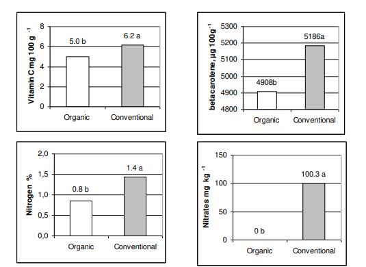
El que posa en l'estudi.
Pregunta: Quina diferència principal hi ha entre les pastanagues orgàniques i les convencionals pel que fa al contingut de nitrogen i nitrats?
El que diu ChatGPT.
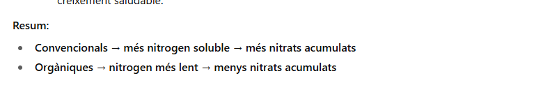
El que diu ChatGPT era cert, a més va trobar l'article que estic fent servir.
Solució: Les pastanagues convencionals contenen generalment més nitrogen soluble i acumulen més nitrats, degut a l’ús de fertilitzants químics. En canvi, les pastanagues orgàniques reben nitrogen de fonts naturals que s’alliberen lentament, per la qual cosa presenten menor contingut de nitrats i un perfil de nitrogen més equilibrat.
Umuhoza, J. N. K., Habimana, S. & Sibomana, P. (2014). Nutritional quality of carrot (*Daucus carota* L.) as influenced by farm yard manure. *World Journal of Agricultural Sciences*, 2(5), 102–107. World Science Research Journals, University of Rwanda, College of Agriculture, Animal Sciences and Veterinary Medicine, Musanze, Rwanda.
Segons Taula 2. Valor mitjà de vitamina C en pastanagues, escrit per Umuhoza, J. N. K., Habimana, S. & Sibomana, P.
El que posa en l'article.
Pregunta: Com afecta l’augment de la dosi d’aplicació de fems (FYM) al contingut de vitamina C en les pastanagues i què indica això sobre la influència dels nutrients del sòl en la qualitat nutricional de la hortalissa?
El que diu ChatGPT.
Hi ha algunes dades iguals però altres diferents.
Error ChatGPT:
Solució: L’augment de la dosi de fems de granja (FYM) en el conreu de pastanagues incrementa progressivament el contingut de vitamina C: de 7,38 g/100 g sense fertilització fins a 7,98 g/100 g amb 20 t/ha de FYM. Això demostra que un sòl més ric en nutrients i matèria orgànica permet a la planta sintetitzar més vitamina C, millorant la qualitat nutricional del cultiu. Per tant,
la gestió adequada dels nutrients del sòl no només afecta el rendiment, sinó també la qualitat nutricional de les hortalisses.
Conclusió: Explicat en un vídeo d'un minut i un altre de cinc minuts sobre la comparació de nutrients.


 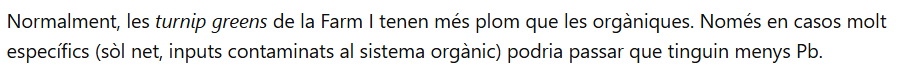
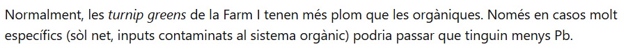